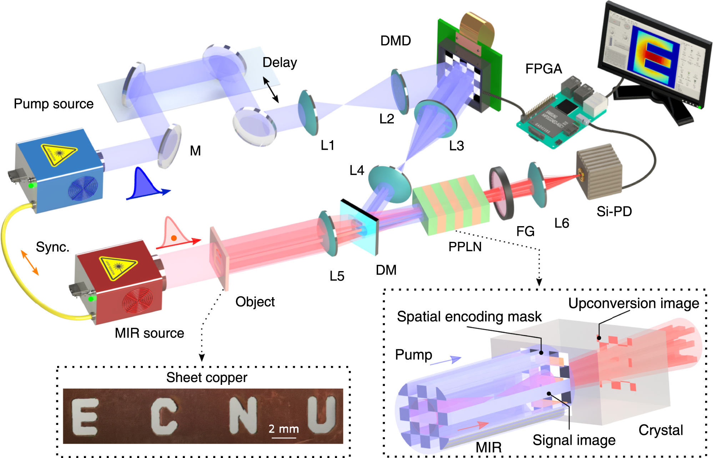
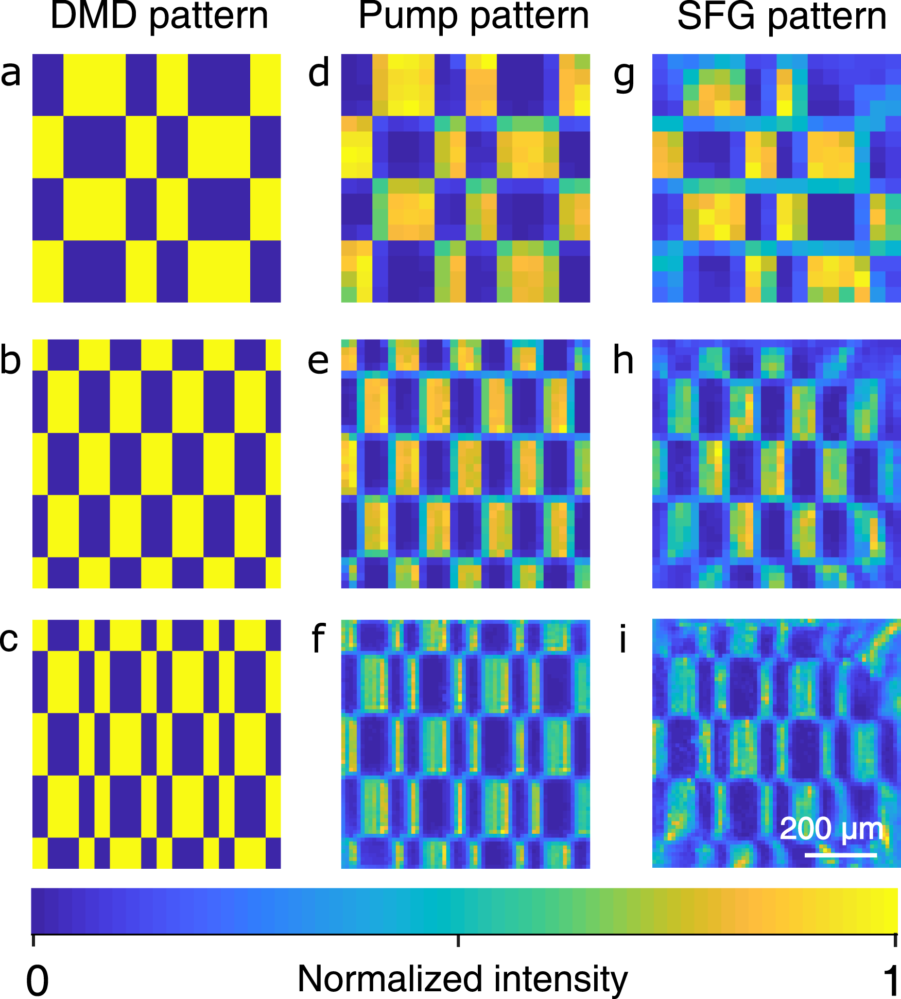
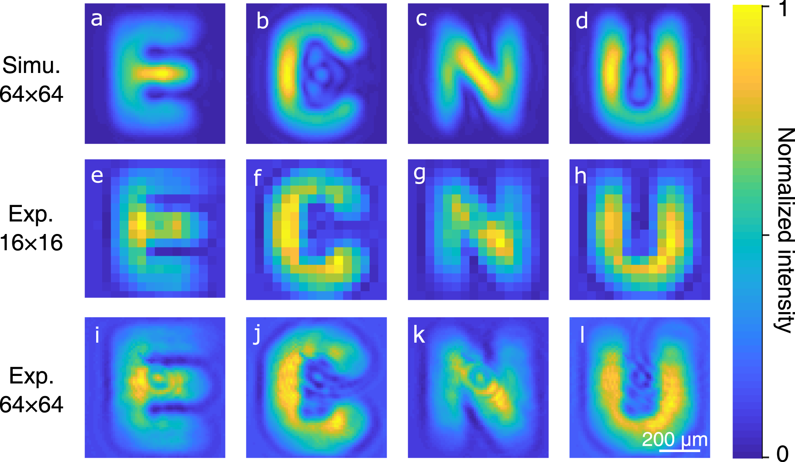
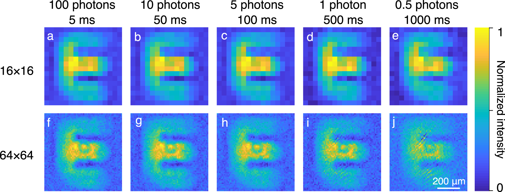
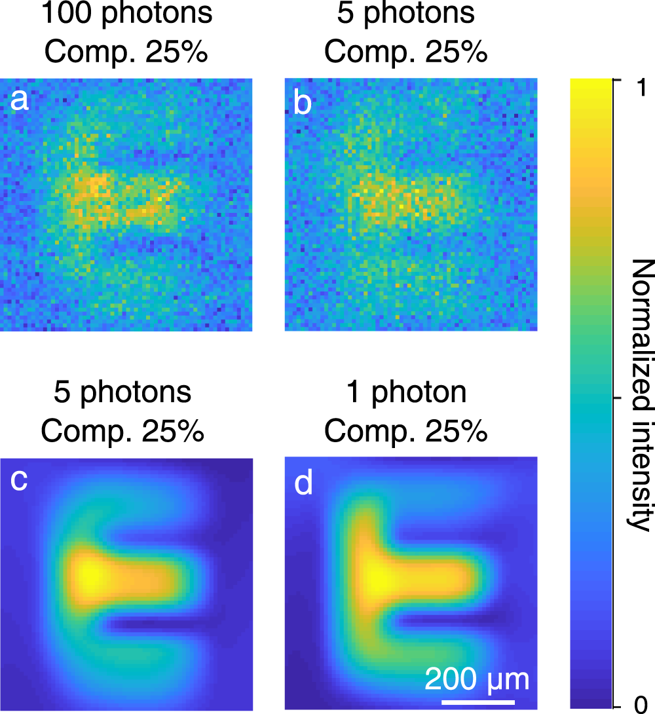

如何用硅探测器做中红外单光子级成像？
利用周期极化晶体中的和频生成，系统将中红外空间调制和频率上转换结合，再由室温硅单像素探测器读取信号。
Mid-infrared single-pixel imaging at the single-photon level
方法与机制
核心光路包含同步的 3,070 nm 中红外信号脉冲和 1,030 nm 泵浦脉冲。DMD 只调制近红外泵浦光，结构化泵浦与携带目标图像的中红外光在 PPLN 晶体内发生和频生成，输出 771 nm 光子。
这一过程有两个作用：
- 泵浦图案通过非线性相互作用间接成为中红外图像的空间编码掩模。
- 中红外光子被转换到硅探测器灵敏的可见波段，可使用室温光电二极管或硅雪崩单光子计数模块。
系统采用 Hadamard 图案及其互补图案做差分测量，以压低背景偏置和光源低频波动。单光子压缩成像部分改用随机图案、primal-dual 重建和 plug-and-play 深度去噪先验。
研究问题拆解
这篇文章的出发点有两个硬件瓶颈：
- 中红外探测器瓶颈。 中红外焦平面阵列通常成本高、暗噪声大、像素数受限，并且常需要制冷。单像素探测器可以降低阵列制造成本，但中红外单光子级探测本身又很难。
- 中红外空间调制瓶颈。 DMD 或液晶 SLM 主要为可见-近红外优化。到 3 μm 附近时，DMD 虽仍有反射，但微镜尺寸与波长导致衍射和束偏转效率问题，难以生成高保真强度图案。
作者的策略是把这两个问题合成一个非线性光学问题：不用中红外 DMD 直接调制目标，而是用可成熟调制的 1,030 nm 泵浦图案在 PPLN 中“门控”中红外信号；不用中红外单光子探测器，而是把被门控的中红外信号上转换到 771 nm 后用硅探测器读出。这样，空间编码和高灵敏探测都发生在成熟波段，但被测对象仍是 3,070 nm 中红外图像。
系统流程细读
- 光源准备。 系统由被动同步的 Er/Yb 光纤激光系统提供两路脉冲。Yb 分支放大后作为 1,030 nm 泵浦；另一分支与 1,550 nm EDFL 混频产生 3,070 nm 中红外信号。两路同步是关键，因为和频生成需要时域重叠。
- 目标成像。 中红外光照射铜片字母目标，目标图像通过透镜缩小并投到 PPLN 晶体中心。这个缩小步骤不是小细节，因为 PPLN 通道尺寸只有
10 × 1 × 1 mm^3，会限制视场。 - 结构化泵浦。 DMD 上加载 Hadamard 或随机图案，形成空间结构化的 1,030 nm 泵浦光。泵浦图案在晶体中与中红外图像重叠。
- 非线性结构化探测。 在满足相位匹配时，SFG 强度近似与中红外场和泵浦场的乘积有关，因此泵浦图案等效于对中红外图像施加空间掩模。
- 可见光探测。 生成的 771 nm 光经滤波去除泵浦相关背景后进入单像素硅探测器。低光子实验中换成硅 APD 单光子计数模块。
- 重建。 Hadamard 全采样使用互补图案差分和转置反演；压缩成像使用随机图案、primal-dual 求解和深度去噪。
核心结果
- 中红外波长：3,070 nm；PPLN 温度稳定在 48.6 °C。
- 16×16 像素时实现 10 Hz 实时成像。
- 实验展示 16×16 和 64×64 两种重建分辨率。
- 最低照明达到 0.5 photons/pulse，但单个图案积分时间增加到 1 s。
- 64×64 图像在 25% 采样率下可辨识；1 photon/pulse 时结合深度去噪仍可得到高对比度结果。
- 制备图案的像素尺寸为 10.8 μm，但实际空间分辨率约 91 μm。
关键数字怎么理解
- 10 Hz 与 0.5 photons/pulse 不是同一工作点。 10 Hz 是 16×16 Hadamard 成像的实时演示；0.5 photons/pulse 低通量成像需要每个图案长达 1 s 的累积。引用时要写清楚“高速”和“极低光子”分别成立的条件。
- 10.8 μm 图案像素不等于空间分辨率。 DMD 可生成更细图案，但上转换系统的数值孔径和 PPLN 相位匹配角带宽限制了可传递的空间频率，所以实际分辨率约 91 μm。
- 25% 欠采样仍能识别字母 E。 这说明目标稀疏、结构简单且深度去噪先验有效；它不能直接证明复杂灰度物体也能在同样采样率下定量恢复。
- 63% 探测效率与 <100 Hz 暗计数。 这些是硅 APD 在 771 nm 的优势，也是上转换路线成立的关键；如果仍在 3,070 nm 直接计数，很难达到相同组合。
原文图表索引
- Figure 1：完整光路。最关键的是 DMD 不直接调制中红外，而是调制泵浦；PPLN 同时承担“空间编码传递”和“频率上转换”。
- Figure 2：验证 DMD 图案、晶体处泵浦图案和上转换图案之间的对应关系，说明编码确实传到输出端。
- Figure 3：Hadamard 重建。16×16 图像清晰但粗糙，64×64 出现明显模糊和结构伪影，直观显示空间带宽受限。
- Figure 4：从 100 降到 0.5 photons/pulse 的 photon-sparse 成像。低光子数能成像的代价是更长积分和更强统计涨落。
- Figure 5：25% 欠采样和深度去噪。它证明算法可缓解噪声，但不能视为测量信息被无损恢复。
图表细读

- Figure 1 的读法。 左下角的铜片字母目标给出真实场景，主光路显示红色 MIR 光和蓝色泵浦光在 PPLN 前合束。右下角放大图说明泵浦的空间图案像一个“非线性掩模”：只有泵浦图案为亮、且 MIR 图像有信号的位置才更强地产生上转换光。

- Figure 2 的读法。 这张图不是最终成像结果，而是系统校验：DMD 上的 Hadamard 图案、晶体处泵浦图案、SFG 输出图案三者要能一一对应。若这一步失真严重，后续单像素相关测量的矩阵就不可信。

- Figure 3 的读法。 仿真 64×64 比实验 64×64 更清晰，说明退化主要来自真实光学系统的空间带宽和非理想映射，不只是算法问题。16×16 的实时视频更像应用演示，64×64 更像分辨率上限试探。

- Figure 4 的读法。 行方向是 photon flux 下降，列/上下两组是像素数变化。64×64 比 16×16 更容易噪声化，因为同样光子数分配到更多像素，单个自由度的信息量下降。

- Figure 5 的读法。 a、b 是没有深度去噪时的压缩重建，c、d 加入深度 denoiser 后随机噪点明显减少。这里需要警惕：denoiser 改善视觉连贯性，但也可能抹掉小缺陷或生成先验偏好的平滑结构。
机制链条
中红外目标难以直接高灵敏成像 -> 用近红外 DMD 生成高质量泵浦图案 -> 泵浦图案在 PPLN 内通过 SFG 选择性转换中红外目标的不同空间投影 -> 输出 771 nm 光子由室温硅探测器或硅 APD 计数 -> Hadamard/随机编码测量形成线性反问题 -> 重建算法恢复图像。
这个链条中最脆弱的是“泵浦图案到 SFG 图案”的保真传递。如果 PPLN 角带宽、泵浦光斑、相位匹配温度或背景荧光不稳定，测量矩阵会随时间漂移，低光子重建会迅速退化。
局限
- 主要目标是二值、稀疏字母或刻蚀结构，尚未充分验证复杂连续灰度场景。
- 相位匹配角带宽限制数值孔径，造成约 91 μm 的空间分辨率；视场还受泵浦光斑和晶体孔径限制。
- 0.5 photons/pulse 结果依赖长积分时间，不能与 10 Hz 结果同时成立。
- 系统需要同步双波长超快激光、精确延迟、温控 PPLN 和窄带滤波，工程复杂度不低。
- 深度去噪可能引入先验偏差，弱小真实结构与噪声之间需要独立验证。